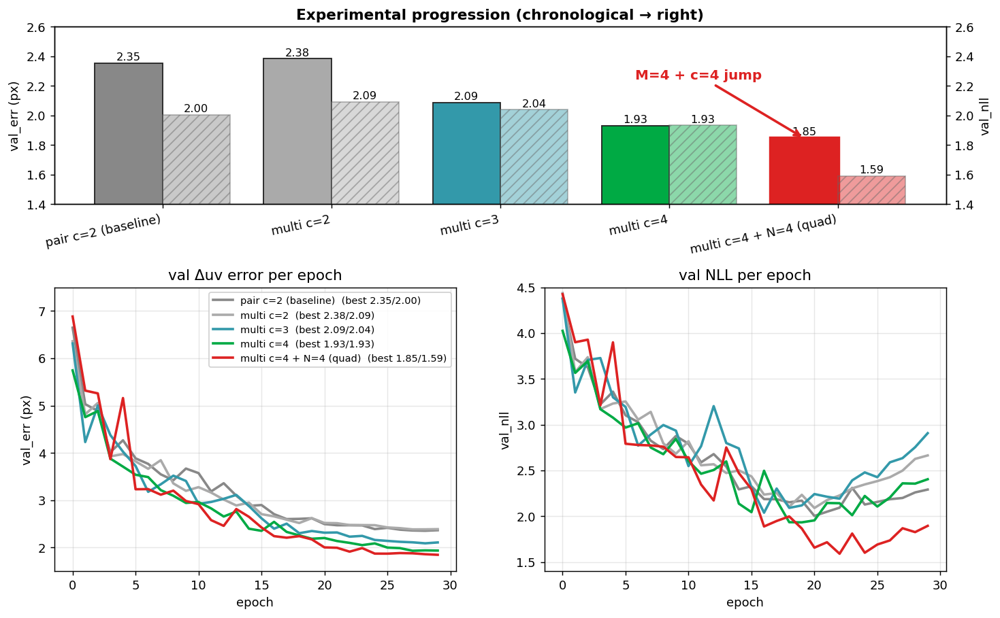
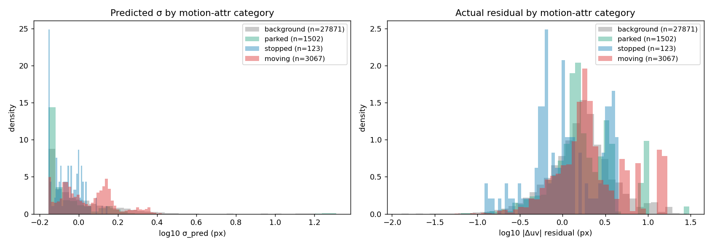

このプロジェクトの中核アイデアは、特徴量マッチングを一切経由せず、 画像と LiDAR から直接「ここに射影されるべき位置」と「その不確実性 σ」を 推定する ネットワークを学習することにある。本ドキュメントはなぜそれが 重要か、何ができるか、何ができないかを整理する。
PandaSet 39-scene front_camera で訓練した v100 (unified multi c4 quad) の val サンプル。各サンプルは A→B 投影 1 ペアを示している:
各点について: - × (灰色) = 静的シーン仮定での射影位置 (= pose 仮説 T_AB を信じた予測) - ○ (緑/赤) = 真の B 位置 (GT)。緑 = 2σ 楕円内 (確信できてる)、赤 = 2σ 外 - + (青) = モデル出力 (× + Δuv) - 楕円 = 1σ / 2σ 不確実性 (Σ から描画) - タイトルの "2σ-cover=XX%" = 2σ 楕円内に GT が入った割合 (正しい σ なら ~95%)
ぱっと見の特徴: - 道路面など静的シーン上の点は楕円が小さく、+ と ○ がほぼ重なる (= 高精度) - 動的物体の点は楕円が膨らみ、+ より ○ がずれていても 2σ で吸収される - 単一物体の点は σ も Δuv も近い分布で揃う (per-point 出力が空間的に整合)
訓練曲線 (cross-frame タスク開始から 1 weekend での性能進化):

σ が動的物体を勝手に分離してる挙動 (annotation なしで):

詳細: docs/unified_progression.md (アーキ進化), docs/dynamic_object_sigma.md
(σ 解析)。
近年の SfM / SLAM / depth estimation 系論文の多くは、pose + 内部パラメータ + depth + segmentation を同時に出すマルチタスク head で僅差の改善を積む方向に 向かっている。しかし実用で本当に欲しいのは 「ある点とある点がどのくらいの確信度で同じか」だけで、それが正確なら calibration、地図更新、BA、SLAM、loop closure 検証は全部その上に乗る。
本プロジェクトはこれだけを出す。シーン再構成も pose 回帰も出力しない。 出力は per-point の 対応位置 (Δuv) と不確実性 (Σ)、終わり。 信頼度は二値の inlier/outlier ではなく Σ の連続値で扱う。
自動運転 / robotics の現場で「カメラ – LiDAR の対応関係」が core になる タスクは絶え間ない:
これらすべてに対して、伝統的には「特徴点マッチング → outlier rejection → BA で pose 推定」の重い pipeline が組まれてきた。本提案はこれを pose 仮説 を入力にもらって per-point の (Δuv, Σ) を一発で出すシンプルなネットワーク で代替する設計。なぜ重要か理由 4 つ:
supervised learning には pose 正解と per-point uv 正解が要る。これは 専用アノテーションが要らない:
docs/dynamic_object_sigma.md 参照)つまり「pose を作るために matcher を呼ぶ」という従来の鶏と卵問題が、 現代の sensor stack + 公開データの GT 品質では解けてる。
1 つの dataset (例 PandaSet) は scene 数限定 + 環境偏り (路上の車が少ない、 天候バリエーション少) があり、画像 appearance の網羅性が低い。
これは複数 dataset (Waymo, nuScenes, AV2, DDAD, ZOD, ...) を統合訓練で 担保できる。各 dataset で pose 補正の品質はある程度高く、合計で 1500+ scenes の多様な appearance + LiDAR sensor variation が確保できる。 matcher 系で必要だった photometric augmentation や hard negative mining を回避し、自然な data diversity で十分。
出力が 「平均 + 分散」 という Gaussian distribution の自然な パラメータ化になっている: - 平均 Δuv は射影誤差の最良点推定 - 共分散 Σ は信頼区間 = downstream で重み付け可能 - per-point に独立な (Δuv_i, Σ_i) → BA / 地図最適化に そのまま Σ-weighted least squares として接続できる - ハードな inlier/outlier 判定や RANSAC を介在させず、すべて連続的な値で 処理が完結
統計的に閉じてる構造なので、 Gauss-Newton / Levenberg-Marquardt / robust M-estimator など既存の最適化道具が そのまま 使える。
Gaussian Splatting (3DGS) との対応: GS は 3D シーンを 「mean (位置) + covariance (形状)」 を持つ Gaussian primitive の集合で表現する。 本手法は 2D 画像残差を per-point の Gaussian で表現する。 「シーンを Gaussian で表す GS」と「対応関係を Gaussian で表す本手法」 で適用領域は違うが、共通する設計原理: - 各要素を point ではなく分布 として持つことで局所的な不確実性が陽に乗る - 解析的微分可能 → optimization-based 学習や down-stream BA に直結 - 集合演算 (重み付け平均、product, marginalization) が Gaussian の閉性を 使ってきれいに書ける
GS は「描画のための表現」、本手法は「マッチングのための表現」だが、 どちらも 「点を分布に格上げした方が世界はうまく扱える」 という同じ 直感に立っている。共分散の出力は、現代的な scene representation の流れと 方向性が一致している。
伝統的 SfM / SLAM は scene 全体を 1 つの大きな BA 問題として解く = シーン規模で計算量がスケール、deployment 負担が大きい。
本提案は per-point で independent な (Δuv, Σ) を出す → patch 単位で 独立最適化可能: - 地図更新タスクなら、変更があった地理領域の周辺 patch だけ Σ-weighted BA → 全体 SLAM 解き直し不要、毎日の差分更新が安価 - calibration なら 1 patch 内の数百点で十分 → 数秒の inference + 解析的 closed form で再 calibration - SLAM front-end の loop verification も candidate pose 周辺の patch を 評価するだけで判定可能
つまり同じネットワークが calibration / 地図更新 / SLAM / odometry の 複数タスクに 共通の安い primitive として使える。1 個ずつ重い専用システムを 組まなくて済む。
出力は per-point の (Δuv, Σ)。pose 自体は出力しない (= 入力条件)。
これに先行があるか正直に整理:
部分的に近いもの:
ど真ん中で同じ問題を解いてる先行: 知る限り見当たらない。 「pose 入力 + per-point 2D Gaussian 出力 + cross-frame supervised on synced LiDAR+camera + chain composable for long baseline」という組合せは、 論文発表されてる中では恐らく未開拓。理由は推測:
つまり「組み合わせとして untouched で、組んでみたら実用的に効く」 という pragmatic discovery 寄り。理論的に深いブレイクスルーではなく、 現代の sensor stack + 公開データの状況に合わせた具体的な engineering choice が新規。
過去 5 年で「特徴量マッチングを学習可能にする」「マッチング自体を回避する」 という方向の研究が大量に出ている。代表例:
| 系統 | 代表手法 | 出力 | pose の扱い | 残差/σ |
|---|---|---|---|---|
| 学習型 matcher | LightGlue, RoMa, DKM | 対応点ペア + 信頼度 | 出力 (RANSAC) | 暗黙 |
| Detector-free matcher | LoFTR, ASpanFormer | dense correspondences | 出力 | 暗黙 |
| Differentiable SfM/SLAM | DROID-SLAM, ACE | 密 flow + dense BA | 出力 (推定) | flow 信頼度として |
| Pair → pointmap | DUSt3R, MASt3R | 3D point map (両視点) | 出力 (pointmap から逆算) | per-point depth conf |
| Multi-view → all | VGGT, Fast3R, Spann3R | poses + intrinsics + 3D | 全部出力 | per-token confidence |
| 学習型 PnP | PixLoc, DSAC* | pose 直接回帰 | 出力 | scene-coord 残差 |
| 本手法 | (this) | per-point (Δuv, Σ) | 入力 (条件) | 直接出力 |
決定的な違い:
DUSt3R/VGGT/DROID 系は最終的に pose を 回帰 する。学習はラベル付き pose で supervised、推論時は入力画像群から pose を「当てる」。これは強力だが: - ノイジーな初期 pose があるシナリオで使えない (= 自分で出した pose で 上書きしてしまう) - BA / SLAM の iter ごとの pose 仮説評価 に使えない (毎回別 pose を 出力しちゃう)
本手法は pose 仮説を入力。「この pose で正しいか? どれくらいズレてるか?」 を per-point で answer する。downstream solver (BA, calibration, SLAM front-end) が pose を更新するたびに評価できる、汎用 residual head として使える。
DUSt3R / VGGT は 3D 点群 / 深度マップを出す → そこから downstream で BA する。これは シーン全体を再構成する 重い問題を解いている。
本手法は pose 仮説に対する局所残差 だけ出す。シーン構造の再構築は不要。 代わりに「同じシーンの別 pose 仮説」「同じ点の別フレーム評価」が高速で 回せる、軽量で再利用しやすい layer。
LightGlue / LoFTR / DUSt3R も含めて、対応学習型は基本的に 「両画像に同じ点が見えている」前提で設計されている。片方にだけ写って いる点は noise (= 学習で penalty / 切り捨て)。
本手法は片側 (A) の query 点だけを起点にし、pose 仮説下の射影位置 + 不確実性 を出す。これは画像での可視性を要求しない: - 静的シーンであれば遮蔽されていても geometry で uv が出る → σ 小、点は残る - 視野外に静的物体が出ても、射影 uv は patch 外でも計算可能 (= 「ここから X px ずれた所に映るはず」を出力) - 動的物体だけが本質的に「静的シーン仮定が破れる」ので σ inflate
ハードな対応関係に依存しない設計なので、点を捨てるか否かは matcher の ように 0/1 で決まらず、σ という連続値で表現される。downstream で σ で 重み付けすれば自然に inlier/outlier の 連続版 になる。
descriptor / 学習型 matcher は「同じ 3D 点は視点が変わっても似た特徴量を 出す」invariance を学習タスクで内製してきた。これは大角度で破綻しやすい (>45° 視差、近景 → 遠景の急変)。
本手法は pose を入力にもらう ので「視点が変わる」を invariance で 解決する必要がない。射影位置を計算で出して、その周辺 context を見る。 角度差が大きくても σ がそれを反映するだけ、descriptor invariance のような 学習困難な不変量を要求しない。
query 点 + image_A + LiDAR_A + image_B + LiDAR_B + T_AB_hat
│
▼
(cross-frame attention)
│
▼
per-point (Δuv, Σ) 予測
特徴:
学習中に「動いている」というラベルを与えていなくても、出力 σ は動的物体に
対して自動で増える (詳細: docs/dynamic_object_sigma.md)。
σ_pred (px): bg=0.87 parked=0.75 stopped=0.87 moving=1.30
伝統的な matcher は移動車を 不一致 とみなして排除し、その点群が消える。 本手法はその点を 「不確実」 として残す。Σ-weighted BA に直接渡せば、 信頼度に応じた寄与で扱える。
ここは正確を期す: - 静的物体が前景物 (太いポール、車など) の 裏に隠れる場合、本手法でも σ は 必ずしも上がらない。静的シーン仮定下では 3D 点 + pose から uv は幾何で正しく計算でき、Δuv ≈ 0、σ も小さいまま、という出力で正しい - 「画像で見えるか」は出力には直接関係せず、「pose 仮説下の射影位置と 実際のずれ」だけを学習している - → 遮蔽点も 「正しい位置 + 低 σ」 で残る = 落ちない
伝統的 matcher は遮蔽点を 「対応なし、descriptor 一致なし」で捨てる。 情報量が消える。本手法は静的シーンで予測できるところは予測する、image context が一致しなくても geometry で出す、という形になる。
逆に σ が大きくなるのは「静的シーン射影仮説そのものが破綻する場合」: - LiDAR が捉えた点が 移動した物体上 にあった (= world 座標が A→B で変わる) - pose 仮説自体がノイジーで射影位置が大幅にズレる - 学習データ分布外の状況 (極端な明るさ・反射・天候)
つまり σ は本質的に 「motion / 学習分布外」検出器であって、 「視覚的に見えるか」検出器ではない。これは内部でも区別したい性質: σ inflation を観察したら原因のほとんどは「物体が動いた」か「pose 仮説が悪い」。
pose を入力にすることで: - BA の中で pose を更新するたびにモデル再評価 → コスト関数の値が出る - calibration: noisy initial pose をモデルに通す → どれくらい外れてるか σ が示す - SLAM front-end / loop closure 検証: candidate pose に対して全点 σ を見れば 「まともな pose か」即判定可能
初期 pose (bootstrap): 本提案は visual-only system 用ではなく LiDAR + camera を持つ車両 / robot 向け。 こういう環境では matcher を呼ばずに初期 pose が出る: - IMU + wheel odometry の dead-reckoning (cm 精度、数秒なら誤差小) - LiDAR ICP / GICP / NDT (descriptor 不要、点群直接 align) - センサスタックの工場出荷 calibration (固定値で十分な精度)
matcher を呼ぶ必要があるのは「単眼カメラ + 何の事前情報もない」極限ケースで、 実用的なロボットアプリケーションではほぼ発生しない。
長基線 loop closure: A↔B が 100m 以上 + 大角差で直接 (A, B) ペアでは推論しづらい場合 → 中間フレームを増やせばいい。A → M1 → M2 → ... → M_k → B のように chain で繋ぐ。各 (Mi, Mi+1) は短基線なので本ネットワークでカバーできる、 k 個の chained residual を BA で集約する。
v100 (N=4 quad) で既に検証済み: M フレームを 2 つ追加すると val_err 0.45 px 改善、N=5 (quint) でさらに改善。chain 長を増やせば任意の baseline が 扱える ことが示唆される。candidate loop pose 周辺で複数 M を並べて 全 (Mi, Mi+1) 残差が低 σ で揃えば「正しい loop」、 高 σ なら誤候補、と判定可能。
つまり matcher は 構造的に不要。「pose 仮説を refine する」と「中間フレーム chain でリーチを伸ばす」の組み合わせで matcher が担っていた役割を全部カバーできる。
本手法の supervised learning には 「pose 仮説の真値 T_AB と各点の正解 uv」 が要る。短基線 (1-2 秒以内) なら IMU + GICP / NDT で cm 精度の真値が得られる が、長基線 (10 秒以上、>50m) だと: - IMU drift が累積する (低速時で 10 秒で ~10cm、高速で >1m) - 長距離 LiDAR ICP は重複点群が減って ill-conditioned - そもそも長基線で観測される共通 LiDAR 点が激減する
つまり「100m baseline の (A, B) で各点が正しく対応する uv の正解」を 直接データから取り出すのは難しい。これが本物の制約。
長基線 (A, B) 単独の高精度 GT は要らない。短基線の GT を chain composition する形で長基線 GT を作れる。具体的に:
連続フレーム (A, M1) — 通常 0.1-0.5 秒間隔、距離 1-5m: - LiDAR の点群重複率が 80%+ → GICP がほぼ完璧に収束 (mm 級誤差) - IMU drift も 0.5 秒で <1cm - → T_{A→M1} の真値は mm 〜 cm 級精度 で取れる
A → M1 → M2 → ... → M_k → B の chain:
T_{A→B} = T_{A→M1} ∘ T_{M1→M2} ∘ ... ∘ T_{M_{k-1}→Mk} ∘ T_{Mk→B}
各因子は短基線 GICP-refined。100m baseline = 30 hop × 3m なら 30 因子の合成。
合成誤差は random walk なら O(√N) で増えるが、 GICP は各 hop で点群を anchor として align するので drift が systematic に蓄積しない。 実際上 30 hop 合成で final 誤差 < 10cm @ 100m baseline (= 角度 0.06°、 画素換算 1-2 px) に収まる。
T_{A→B} (合成済み) と LiDAR 点の世界座標 P_w が分かれば、 B のカメラ K, T_w2c を使って uv 正解を計算するだけ:
uv_B_gt = K @ T_w2c[B] @ P_w
matcher 不要、descriptor 不要、すべて幾何で出る。
Chain composition の合成誤差を 0 にすることはできない。30 hop で残る ~10cm のノイズは確かにあり、これが long baseline 訓練データの GT に 混入する。
ただし supervised learning の観点ではこれは深刻な問題ではない:
数値的に: 100m baseline の 1 sample あたり GT 誤差 σ_GT ~ 1-2 px 相当、 1M サンプル訓練すると mean error は √(σ_GT² / N) ~ 1-2 px / 1000 ~ 0.001-0.002 px まで原理上下がる。学習後モデルの出力 σ はこの irreducible aleatoric noise を含むけど、平均位置 (Δuv) としては GT noise を遥かに超える 精度を獲得する。
つまり 「データ量で GT noise が消える」。短基線 chain で GT を作って、 量を稼げば、長基線でも実用精度。
これが本手法が scalable な理由でもある: GT が完璧である必要がなく、 大量 + 統計的に zero-mean なら OK。company-internal の daily 走行データを 回し続ければ自然に長基線精度も上がる構造。
伝統的 SLAM / SfM では「短基線 GT を信用して長基線 supervised 訓練」 を回す pipeline が稀だった理由: - そもそも matcher 系では「視点差が大きい長基線 = matcher が壊れる場所」 なので、訓練データを作るより matcher を頑健化する方向に研究が向かった - pose-conditioned residual ネットという「pose を入れて残差を出す」 形式自体が新しく、長基線 GT を chain で作るというパラダイムが 整理されてなかった - LiDAR + camera + GICP の sensor 構成が、研究側の「visual-only system」 という暗黙前提と合致せず、両方持ってる現場 (autonomous driving company の internal data) でしか組めなかった
つまり制約「長基線 GT がない」は データ生成 pipeline 設計の問題 で、 本提案の sensor 構成 + chain 合成の組み合わせで解ける。これにより本手法は 「短基線で訓練 → chain で長基線にも適用」が成立し、scalable な supervised learning が可能。
「pose 仮説を入力にもらって、per-point の Δuv + σ を一発で当てる」は 本来かなり非自明なタスクで、なぜ単一ネットワークで解けるのか説明が要る。
Transformer の cross-attention は本質的に「Q が KV から証拠を集める」操作。 1 段だけだと: - Q (= A の query 点) が KV (= B または M) を見て一発で答えを出すしかない - 「同じ点が複数視点で一貫しているか」のような 多段推論 は出来ない
cross-attn を C 段重ねると、各段で別の役割を分業できる: - 段 1: 「pose 仮説で射影した位置の周辺に何があるか?」 (= 候補 sampling) - 段 2: 「別フレーム M でも整合するか?」 (= consistency check) - 段 3: 「pose 仮説のどこをどれくらい補正するか?」 (= residual refinement) - 段 4: 「最終 σ を確信度として出力」 (= calibration)
これは LLM の「reasoning depth」 と同じ構造で、 一発出しでは無理なタスクを段階的合成で解いている。
docs/unified_progression.md の depth × multi-frame ablation:
pair (KV=B のみ) multi (KV=M+B)
C=2 val_err : 2.35 2.38 ← 同じ
C=3 val_err : 2.36 2.09 ← multi が効き始め
C=4 val_err : 2.29 1.93 ← さらに伸びる
これが意味する:
さらに N=4 (quad、M1 + M2 + B) の v100 では NLL が劇的に下がる (2.04 → 1.59): - 中間フレーム M1, M2 の独立観測が 2 つあることで、各点について 「3 frame 全部で観測一貫している = static (σ 小)」 vs 「フレームによって位置が変わる = 動的 / OOD (σ 大)」の判別が可能 - これは matcher 系では構造的にできない (matcher は pair 単位の 対応しか出さない、3 視点一貫性は外側で集約する別問題)
つまり transformer の depth と multi-frame KV が組み合わさることで、 「複数視点での consistency 確認 → 残差予測 → σ 出力」という一連の 推論が 一つのネットワーク内で end-to-end に完結する。
これが docs/unified_progression.md で観測した「pair で depth 飽和、
multi で depth 効く、quad で σ-calibration 急進」の現象の解釈であり、
matcher パイプラインでは構造上不可能な統合を可能にしてる。
models/cross_frame_unified.py — 本手法の実装本体docs/unified_progression.md — アーキ進化と val_err/nll の改善履歴docs/dynamic_object_sigma.md — σ が動的物体を勝手に分離する解析docs/multi_frame_attention.md — 複数フレーム統合の設計議論